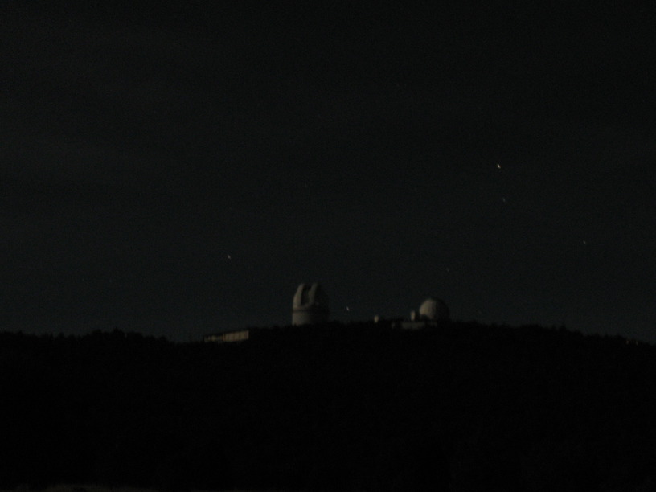

14 Nov 2008, Ft. Davis, TX
It's late & cold, but I'm happy. Headwinds are the most psychologically taxing part of this journey. I rode 21 miles into the wind today & it took over 3 hours. That was Marfa to Ft. Davis. From Ft. Davis I climbed into the Davis Mtns & although it was physically harder, I was much happier because the terrain & direction change basically ended the headwinds (& I even got tailwinds!).
McDonald Observatory Star Party was very cool. Met people at lunch & saw them at the Observatory again. The librarian was very helpful in identifying a spot to camp.
Cold night (below freezing?) & high altitude (6000'). I'm excited to see how my down bag performs.
Margin notes:
Star Party
Double cluster
another cluster
Jupiter & 2 moons
Ring Nebula→very cool
